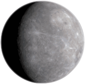
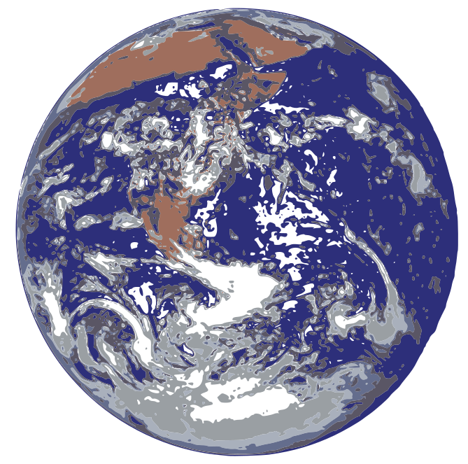
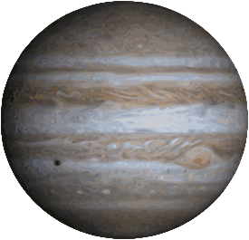
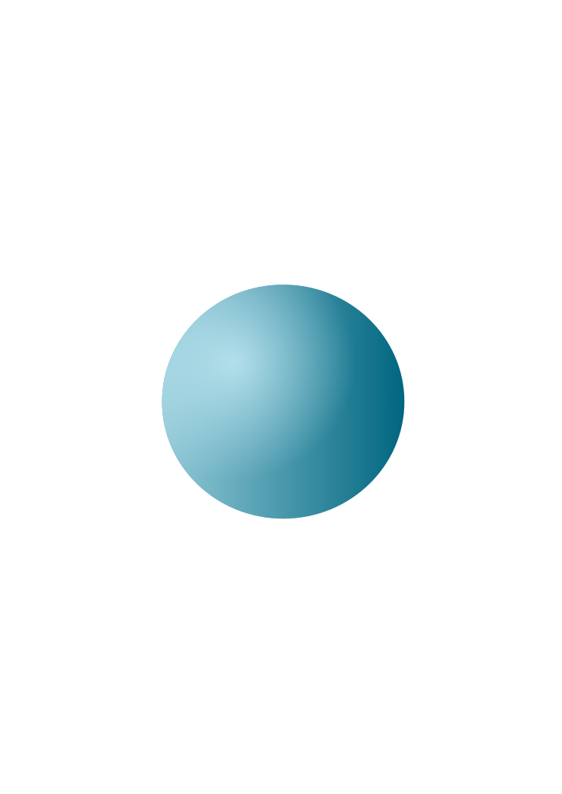
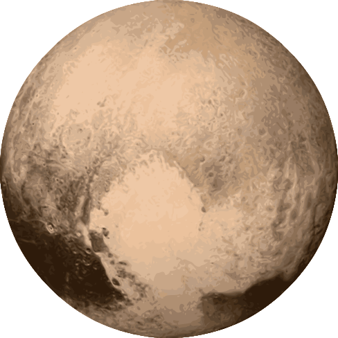

Solar System
Solar System
Solar System
Solar System
Solar System
Solar System

Planet Merkurius
Merkurius adalah planet terkecil di Tata Surya sekaligus yang terdekat dari Matahari. Periode revolusi planet ini merupakan yang terpendek dari semua planet di Tata Surya, yakni 87,79 hari.
Planet Venus
.svg)
Venus adalah planet terdekat kedua dari Matahari setelah Merkurius. Planet ini mengorbit Matahari selama 224,7 hari Bumi.[11] Venus tidak memiliki satelit alami dan dinamai dari dewi cinta dan kecantikan dalam mitologi Romawi

Planet Bumi
Bumi adalah planet ketiga dari Matahari yang merupakan planet terpadat dan terbesar kelima dari delapan planet dalam Tata Surya. Bumi juga merupakan planet terbesar dari empat planet kebumian di Tata Surya. Bumi terkadang disebut dengan dunia atau Planet Biru.

Planet Mars

Mars adalah planet terdekat keempat dari Matahari. Namanya diambil dari dewa perang Romawi, Mars. Planet ini sering dijuluki sebagai "planet merah" karena tampak dari jauh berwarna kemerah-kemerahan.

Planet Jupiter
Jupiter atau Yupiter adalah planet terdekat kelima dari Matahari setelah Merkurius, Venus, Bumi, dan Mars. Planet ini juga merupakan planet terbesar di Tata Surya.
Planet Saturnus

Saturnus adalah planet keenam dari Matahari dan merupakan planet terbesar kedua di Tata Surya setelah Jupiter. Saturnus juga merupakan sebuah raksasa gas yang memiliki radius rata-rata sekitar 9 kali radius rata-rata Bumi.

Planet Uranus
Uranus (berasal dari nama Latin Ūranus untuk nama dewa Yunani Οὐρανός) adalah planet ketujuh dari Matahari. Uranus merupakan planet yang memiliki jari-jari terbesar ketiga sekaligus massa terbesar keempat di Tata Surya.

Planet Neptunus

Neptunus merupakan planet terjauh (kedelapan) jika ditinjau dari Matahari. Planet ini dinamai dari dewa lautan Romawi. Neptunus merupakan planet terbesar keempat berdasarkan diameter (49.530 km) dan terbesar ketiga berdasarkan massa.

Planet Pluto
Pluto adalah planet katai di sabuk Kuiper dan objek trans-Neptunus pertama yang ditemukan. Pluto merupakan planet katai terbesar dan bermassa terbesar kedua di Tata Surya dan benda terbesar kesembilan dan bermassa terbesar kesepuluh yang mengorbit Matahari secara langsung.